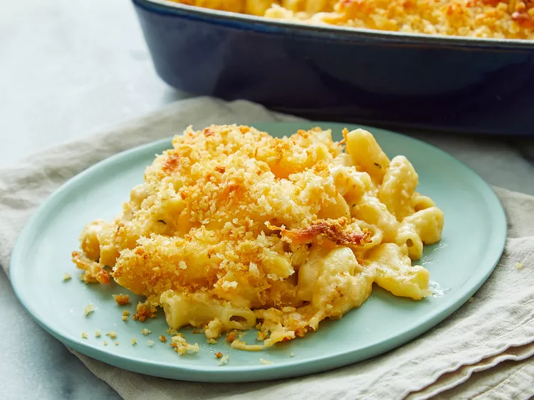

Chef John's Macaroni and Cheese

Description:
This is an easy-to-make macaroni and cheese recipe with a crispy panko crust. This recipe will require 15 minutes of prep, 45 minutes total cook time, and serves 6. The pasta and sauce will start their cooking journey on the stovetop, but will come together in a casserole dish to finish in the oven with a delicious, crispy panko breadcrumb topping.
Ingredients:
- 1 (16 ounce) package elbow macaroni
- 1/4 cup butter
- 1/4 cup all-purpose flour
- 1/4 teaspoon dried thyme
- 1/4 teaspoon cayenne pepper
- 1/8 teaspoon white pepper
- 3 cups milk
- 1 teaspoon salt
- 1/4 teaspoon Worchestershire sauce
- 1 pinch ground nutmeg
- 3 cups shredded sharp Cheddar cheese, divided
- 1 teaspoon Dijon mustard
- 1/2 cup panko bread crumbs
- 1 tablespoon butter, melted
Steps:
- Preheat the oven to 400 degrees F (200 degrees C).
- Bring a large pot of lightly salted water to a boil. Cook elbow macaroni in the boiling water, stirring occasionally, until tender yet firm to the bite, about 8 minutes. Drain and set aside.
- Melt 1/4 cup butter in a large saucepan over medium heat. When butter starts to foam and bubble, stir in flour; cook on medium heat until flour begins to turn pale yellow, 3 to 4 minutes.
- Add thyme, cayenne, and white pepper; cook and stir another minute, then whisk in 1 cup milk until smooth. Pour in remaining milk and whisk again. Bring sauce just to a simmer.
- Stir in salt, Worchestershire sauce, and nutmeg. Simmer, whisking often, on medium-low heat until thickened, about 8 minutes.
- Turn heat off, then add 2 1/4 cups Cheddar cheese; stir until melted and combined. Mix in Dijon mustard.
- Transfer macaroni into a casserole dish, then pour in cheese sauce; stir to thoroughly combine pasta with sauce.
- Mix together panko bread crumbs and 1 tablespoon melted butter in a small bowl.
- Sprinkle mixture over macaroni and cheese. Sprinkle remaining 3/4 cup Cheddar cheese on top.
- Bake in the preheated oven until top is golden brown, about 20 minutes.